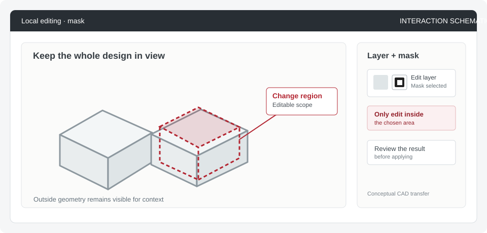
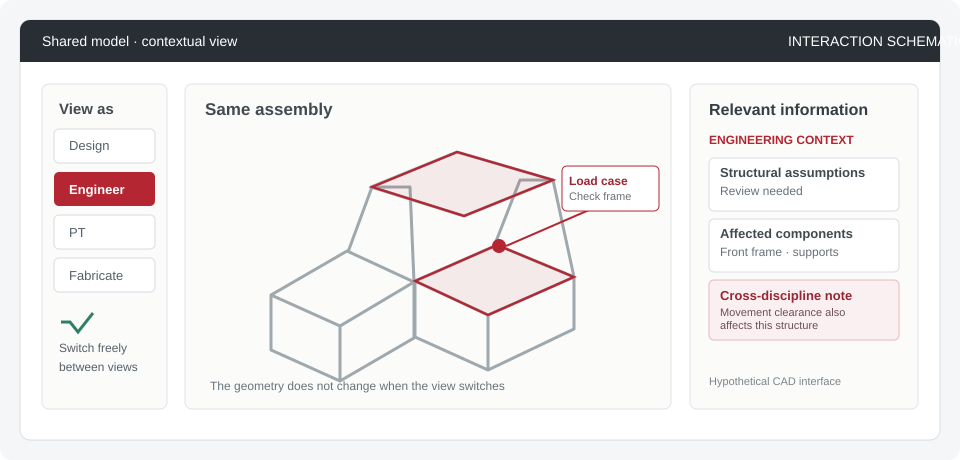

Research notes · Brainstorming · Selected precedents
Interaction precedents worth exploring in CAD
Two archived interaction patterns selected for further thought. I now read them through the epistemic-state framework: what state of a design decision they might support, which cognitive mechanism the interaction could invoke, and what would have to be true for that mapping to hold.
Status: archived candidates, not implemented systems or validated research contributions. The original product behavior, proposed CAD transfer, and current framework interpretation are intentionally separated below.
Layer Masks — change one part while preserving context
Current framework: primarily a known unknowns interaction candidate. The user already recognizes an unresolved region; the mechanism is decomposition + externalization of scope, making explicit what may change and what should remain fixed while reasoning continues.

Existing interaction
In Photoshop, a user can add a layer mask and edit it to show or hide selected portions of a layer. A mask on an adjustment layer can limit that adjustment to chosen parts of an image, leaving other regions untouched. The mask remains editable.
Possible CAD interaction (hypothesis)
- Select the head-support region in the full crawling-trainer assembly.
- Indicate what may change during this exploration and which surrounding geometry should remain unchanged.
- Explore a replacement head support while keeping the rest of the assembly visible, inspect connections and clearance, and revise the scope if necessary.
- Review the proposed change before applying it to the shared design.
What seems interesting: the user defines the boundary of an exploration, rather than merely hiding objects or selecting faces. A 3D assembly complicates this because local edits may affect connections and adjacent components outside the selected region.
Open question: Should the scope limit actual geometry edits, identify design decisions to preserve, or define where a suggested modification may apply? These are not equivalent and need to be explored separately.
Adobe: Add and edit layer masks ↗ · Adobe: Targeted adjustments ↗
Dev Mode — inspect the same design through another working context
Current framework: potentially spans unknown knowns and known unknowns. Switching context can activate knowledge from another disciplinary perspective, or help a user seek expertise once a gap is already recognized. The candidate mechanism is perspective taking + contextualization.

Existing interaction
Figma provides a dedicated developer-facing inspection and handoff environment. Its Dev Mode includes inspection tools, design-specific information and focus views. The mode does not automatically infer everything a user needs from their identity.
Possible CAD interaction (hypothesis)
- Open the same crawling-trainer model and choose the current working context, such as design, engineering, physical therapy or fabrication.
- Inspect relevant geometry alongside the knowledge and questions associated with that task: e.g., structural assumptions for engineering or contact and movement requirements for physical therapy.
- Switch contexts or inspect information from another discipline without losing the common model or restricting access by role.
- Contribute findings to the relevant geometry for the next collaborator.
What seems interesting: different people can approach the same geometry with different questions. The user controls the view, and overlapping requirements remain visible across relevant contexts.
Open question: How can contextual views expose relevant information without concealing dependencies or considerations outside the user's expertise? Task-based views should not become rigid role permissions.
Selection rule for future candidates: look for a concrete user-controlled interaction that changes how people act on, inspect, or explore a design in context. Do not archive additional patterns solely because their interface resembles a CAD feature.